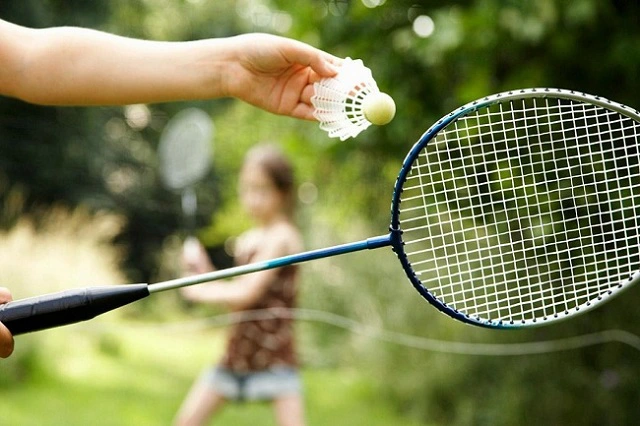
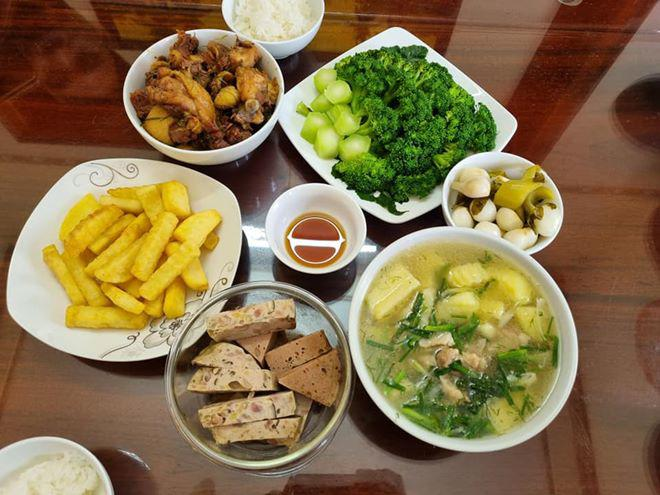

Giới thiệu
With a strong passion for design and technology, I have learned and applied tools such as Figma, Adobe XD, and Sketch to create attractive and easy-to-use interfaces. During my studies, I participated in many group projects where I not only honed my design skills but also improved my ability to communicate and collaborate with other team members. In addition, I also have good English with a TOEIC score of 700, which helps me to be more confident in communicating with clients and participating in international projects. I believe that my English ability will be a great advantage when working in a professional and international environment. I am looking for internship opportunities to apply the knowledge I have learned in practice and develop a career in web design. I am always willing to learn and contribute to creative projects.
Work Experience
-
Web Design Intern
XYZ Company - June 2023 to December 2023, During my internship at XYZ Company, I had the opportunity to participate in various projects focused on designing user interfaces for web applications. As an intern, I:
- Designed the User Interface (UI) for an e-commerce website, where I applied design principles to create a user-friendly and easily navigable experience. I used Figma to create mockups and prototypes for the project.
- Conducted user research to gather feedback on the designs. Through data analysis and feedback, I was able to improve features and interfaces, significantly enhancing the user experience.
- Collaborated closely with developers to ensure that my designs were implemented effectively and accurately. This collaboration helped me gain a deeper understanding of the web development process and how design and programming interact.
- Participated in brainstorming sessions to generate innovative design ideas and solutions. I contributed actively to team discussions, allowing me to develop my creative thinking skills and learn from more experienced designers.
Personal Project
-
Personal Website
In addition to my internship experience, I developed a personal website to showcase myself and my projects. This project included:
- Designing and developing a website using HTML, CSS, and JavaScript. Through this self-initiated project, I enhanced my programming skills and gained a better understanding of how to optimize web performance.
- Applying UI/UX design principles to create an appealing interface that makes it easy for users to find information. I experimented with different layouts and used harmonious colors to create a pleasant user experience.
My Preferences
-
Badminton Sports

- This is my favorite sport, it is a healthy, healthy sport to relieve stress after work.
My Preferences
-
Cook a variety of dishes

- I used to cook for my parents, they loved the food I made
My Preferences
-
Trip

- I love going on long trips with friends